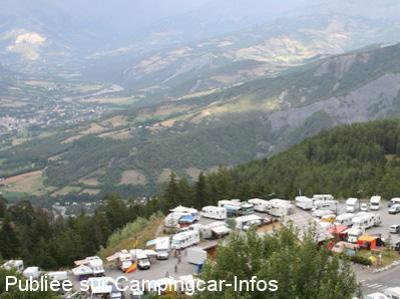
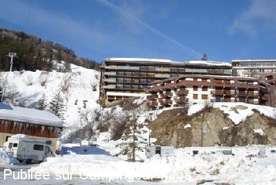

ASN = Aire de services avec stationnement nuit possible de :
PRA LOUP
(N° 305)
Accès/adresse :
Parking des Choupettes
Pra Loup
04400 UVERNET FOURS
Pra Loup
04400 UVERNET FOURS
Latitude : (Nord) 44.36755° Décimaux ou 44° 22′ 3′′
Longitude : (Est) 6.60601° Décimaux ou 6° 36′ 21′′
Tarif : 2011
Stationnement, eau, vidanges : 2 €
Type de borne : FLOT BLEU
Services :


Autres informations :
Station de ski à 1500 m d'altitude
Aire goudronnée, en pente,
la borne est toujours accessible donc mise en hors gel en hiver.
Tél Office du Tourisme : +33(0)492 841 004

Le 15/10/2009 par Aurélie

Le 16/04/2009 par Roby
de
Claude73
le 14/12/2014 :
De passage en Septembre 2014, nous étions 6 Ccars; aire goudronnée légèrement en pente mais avec vue superbe sur la vallée. Nuit bien calme
De passage en Septembre 2014, nous étions 6 Ccars; aire goudronnée légèrement en pente mais avec vue superbe sur la vallée. Nuit bien calme
de
GES
le 21/02/2012 :
De passage le 15/02, nous etions 4 CCars.
La moitie du parking est desormais interdit aux CCARS
sinon nuit calme ,plateforme de vidange gelée
De passage le 15/02, nous etions 4 CCars.
La moitie du parking est desormais interdit aux CCARS
sinon nuit calme ,plateforme de vidange gelée
de
Roby
le 16/04/2009 :
De passage en février, cette aire est pratique, goudronnée et, pas si pentue que ce que j'ai lu. Belle vue et un téléphérique gratuit à proximité ouvert les vacances et week-end en hiver. Borne chauffée et WC à proximité. Calme, RAS...
De passage en février, cette aire est pratique, goudronnée et, pas si pentue que ce que j'ai lu. Belle vue et un téléphérique gratuit à proximité ouvert les vacances et week-end en hiver. Borne chauffée et WC à proximité. Calme, RAS...
de
E.L
le 04/11/2007 :
Le parking n'est effectivement pas en sécurité, il est aussi en pente ce qui est très désagréable. Pour faire les vidanges, on s'aperçoit que la borne est en contre-pente ce qui occasionne des débordements. Souvenons nous quand même que beaucoup de stations ne se sont pas encore équipées d'aire de CC.
Le parking n'est effectivement pas en sécurité, il est aussi en pente ce qui est très désagréable. Pour faire les vidanges, on s'aperçoit que la borne est en contre-pente ce qui occasionne des débordements. Souvenons nous quand même que beaucoup de stations ne se sont pas encore équipées d'aire de CC.
de
BOURRILLON
le 26/10/2006 :
Je ne suis pas d'accord avec certains commentaires plus haut. Il y a effectivement une borne et un panorama magnifique mais elle est très en pente et au dessus d'un précipice, elle est aussi située en contrebas de la route et l'hiver je ne laisserai pas mon CC car il n'y a aucun rail de protection. Je pense que le parking juste en face vraiment au pied du telésiège serait plus approprié (à méditer). Hors saison, il n'y a pas de téléphérique et le centre et un peu loin (ça monte beaucoup).
Je ne suis pas d'accord avec certains commentaires plus haut. Il y a effectivement une borne et un panorama magnifique mais elle est très en pente et au dessus d'un précipice, elle est aussi située en contrebas de la route et l'hiver je ne laisserai pas mon CC car il n'y a aucun rail de protection. Je pense que le parking juste en face vraiment au pied du telésiège serait plus approprié (à méditer). Hors saison, il n'y a pas de téléphérique et le centre et un peu loin (ça monte beaucoup).
de
danielle
le 24/08/2006 :
Ce parking à l'entrée de Praloup est maintenant équipée d'une borne Flot Bleu fonctionnant avec pièces (2€). De plus, des WC et un lavabo sont à disposition des camping-caristes. Du parking, point de vue magnifique sur Barcelonnette.
Ce parking à l'entrée de Praloup est maintenant équipée d'une borne Flot Bleu fonctionnant avec pièces (2€). De plus, des WC et un lavabo sont à disposition des camping-caristes. Du parking, point de vue magnifique sur Barcelonnette.